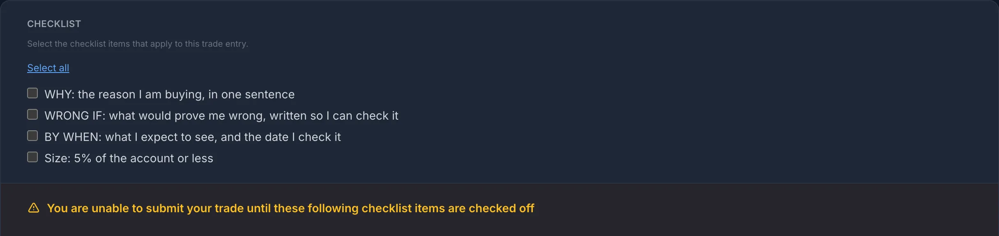
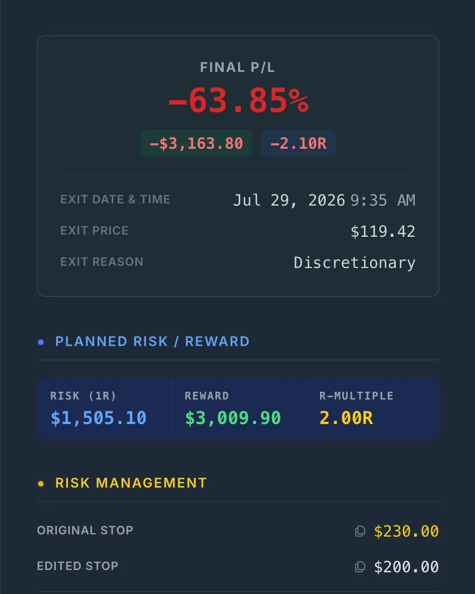
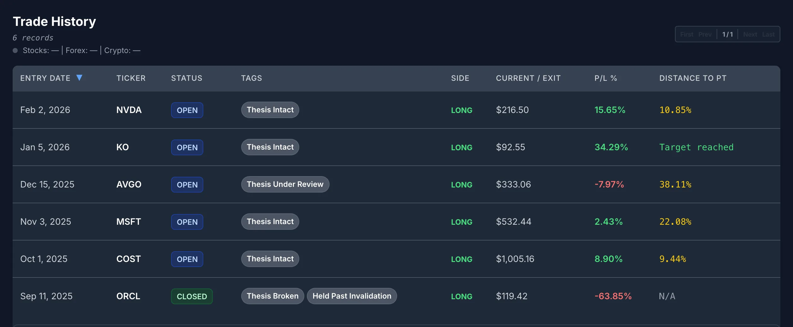

Holders Have No Stop
A swing trader writes a stop before entry, and the distance to it is the trade’s risk: one unit, 1R. When price hits it, the trade is over and the result is measured against that unit. A holder buying for three years doesn’t want a stop 5% away, and shouldn’t have one. A normal year for a single stock can include drawdowns that would stop out any trader.
Without a stop, though, nothing defines being wrong. Every drop looks like volatility and every rally looks like proof. Holders don’t tend to lose money in one bad decision. They lose it in a run of small reasonable-sounding ones: this is just a pullback, the story hasn’t changed, I’m in it for the long term. Each of those can be true. The trouble is that there is no fixed point to test them against.
The holder’s version of a stop is the thesis invalidation: the specific thing that, if it happens, means the reason you bought is gone. It is only honest if you write it at purchase, before the price has given you a reason to see it differently.
The Three Lines to Write at Purchase
Three lines, decided before the order goes in. The test for each line: could someone else read it a year from now and say whether it happened, without asking you?
| Line | Fails the test | Passes |
|---|---|---|
| WHY | “Great company, AI tailwinds.” | “The contracted backlog turns into cloud revenue on the schedule management gave: $18B this fiscal year.” |
| WRONG IF | “If the fundamentals change.” | “Capex guidance for the year rises by a third or more, or a close below 230.00, whatever the reason.” |
| BY WHEN | “Long term.” | “Check every quarterly report. The full test is the fiscal-year number in June 2026.” |
Two details matter more than they look:
- Write two kinds of WRONG IF. One is about the business: the thing your WHY depends on stops being true. The other is a price line you sell at whatever the story, because a story can always be stretched to fit a falling price, while a closing price can’t be argued with.
- The WHY and the WRONG IF are separate bets. The worked example below is a holder whose WHY came true almost to the dollar while the position lost 64%. A reason that turns out right doesn’t cancel a sell condition that already fired.
It is easy to mean to do this and then skip it on the day, so make it a gate rather than a habit. In SignalDeck the entry checklist can be set to block the New Trade form until every item is ticked:

How Theses Drift: One Position, Ten Months
On September 9, 2025, Oracle reported remaining performance obligations (contracted revenue not yet recognized) of $455 billion, up 359% year over year, and laid out a schedule for cloud-infrastructure revenue of $18 billion in the current fiscal year and $32 billion in the next. The stock closed up about 36% the following day. Our hypothetical holder bought at the open on September 11, at 330.34, with the entry checklist ticked, and saved the three lines as the trade’s first note a minute later:
![A SignalDeck trade note dated Sep 11, 2025, 9:31 AM EDT. WHY: Oracle's contracted backlog (RPO) went to $455B, up 359%. I am betting it turns into cloud-infrastructure revenue on the schedule they gave: $18B this fiscal year, $32B next. WRONG IF: (a) capex guidance for the year rises by a third or more, meaning the build costs far more than the backlog story assumed; or (b) a close below 230.00, about 30% down, whatever the reason. BY WHEN: check every report. The full test is the fiscal-year cloud number in June 2026. Target 531 (2R) over three years. SIZE: 15 shares, $4,955, 5% of the account. A loss to 230 is $1,505, 1.5% of the account. That is 1R.](../../assets/screenshot-thesis-purchase-note.webp)
Here is what happened next, with each event set against what the holder wrote that day. Prices are real ORCL daily closes. The notes are the holder’s.
| Date | Close | What happened | What the holder wrote |
|---|---|---|---|
| 2025-11-12 | 226.99 | Closes below 230. Line (b) fires. | “Nothing in the backlog has changed. This looks like the whole AI trade selling off. Moving the line to 200. Holding.” |
| 2025-11-21 | 198.76 | Closes below the new 200 line. | Nothing. |
| 2025-12-11 | 198.85 | The previous evening’s report raises full-year capex guidance to $50B from $35B, up 43%. Line (a) fires. | “That is line (a) almost word for word. But … I am a long-term believer in AI infrastructure. Holding.” |
| 2026-03-02 | 149.25 | Down 55% from the entry. | “This is a five-year story, not a one-year trade.” |
| 2026-06-11 | 184.10 | The four quarterly reports put fiscal-year cloud-infrastructure revenue at $18.1B. The WHY comes true. Free cash flow for the year was about −$23.7B. The stock falls 8.5%. | “Proof I was right about the business. Holding.” |
| 2026-07-28 | 119.96 | Down 64%. The holder rereads the first note. | “What I hold now is not the idea I bought.” Sells at the next open, 119.42. |
Every one of those notes sounds reasonable on the day it was written. Read in order, they show the three ways a thesis drifts:
- The line moves. 230 became 200 on the day 230 broke. Then 200 broke nine days later and nothing was written at all. A line moved once often isn’t enforced the second time either.
- The reason changes. “The backlog turns into revenue on schedule” became “I believe in AI infrastructure.” The first can be checked. The second can’t be proven wrong by anything that happens to the stock.
- The horizon stretches. A thesis with a June 2026 test became “a five-year story” at −55%. Lengthening the horizon after a loss means the original deadline is about to be missed.
![SignalDeck Trade Journal tab for the ORCL position, newest first: Jul 29, 2026 sold 15 at 119.42, -2.10R, with the line (b) and line (a) exits at about -1.05R and -1.39R; Jul 28, 2026 review against the first note; Jun 11, 2026 the four quarterly reports put fiscal-year cloud infrastructure revenue at $18.1B, stock down 8.5% to 184.10, holding; Mar 2, 2026 149.25, down 55%, a five-year story; Dec 11, 2025 capex guidance raised to $50B from $35B, that is line (a) almost word for word, I am a long-term believer in AI infrastructure, holding; Nov 12, 2025 closed 226.99 below my 230 line, moving the line to 200, holding; Sep 11, 2025 the purchase note with WHY, WRONG IF, BY WHEN and SIZE.](../../assets/screenshot-thesis-journal-drift.webp)
Reviewing Against the Original, Not the Memory
A review that starts from your current view of the stock will agree with your current view. Start from the purchase note instead, and answer three questions in order:
- Has any WRONG IF line fired? Yes or no, from the note as written, not as you would write it today.
- Is the BY WHEN on track? Is the thing you expected arriving on the schedule you gave it?
- If a line fired, would you buy this today, at this price and this size, for the reason you hold it now? If yes, write that as a new thesis with new lines, as if it were a new purchase. If you can’t write one that passes the test, sell.
Run on schedule, after each quarterly report, that review would have caught the drift in November. Here is the cost of each version of the exit, in R against the 230 line the holder set at purchase:
| Exit | Fill (next open) | P&L on 15 shares | R |
|---|---|---|---|
| Line (b): close below 230, Nov 12 | 224.99 | −$1,580 | −1.05R |
| The moved line: close below 200, Nov 21 | 196.86 | −$2,002 | −1.33R |
| Line (a): capex guidance up 43%, Dec 10 report | 190.62 | −$2,096 | −1.39R |
| The review, Jul 28 | 119.42 | −$3,164 | −2.10R |
Two honest caveats. First, selling on the line would not have looked clever the whole way: the stock closed at 248.15 on June 1, 2026, above the November exit, and a holder who sold at 224.99 would have spent that week second-guessing it. A sell rule is a decision made in advance about risk, not a forecast, and it will sometimes take you out before a rebound. Second, this is one position, picked because it shows the failure clearly. One trade settles nothing about whether a rule works. What settles it is twenty positions, each with its first note intact. And to be plain about the obvious objection: we wrote this holder’s lines in October 2026, knowing how the story ended, so the thresholds sit conveniently close to what happened. That is exactly the advantage a real journal takes away from you. Your own first note is written before you know.

Sizing When There’s No Stop
Traders size from the stop: decide what 1R costs, divide by the distance to the stop, and that is the share count (the fixed-R method). A holder can run the same arithmetic backwards. Pick the position size as a percentage of the portfolio, then let the price line tell you what that position puts at risk:
account risk = position size (% of account) × distance to the price line (%)
| Position size | Line 20% away | Line 30% away | Line 40% away |
|---|---|---|---|
| 3% of account | 0.6% | 0.9% | 1.2% |
| 5% of account | 1.0% | 1.5% | 2.0% |
| 10% of account | 2.0% | 3.0% | 4.0% |
The ORCL holder sat in the highlighted cell: 5% of a $100,000 account, a line about 30% away, so 1R was $1,505, or 1.5% of the account. Two things follow. A wide line is fine, provided the position is small enough that hitting it is survivable. And the R figure is what makes the slippage visible: “down 64%” reads like the market’s doing, while −2.10R says the holder lost twice what they had agreed to risk. Most of that second R came from decisions they made, not from the price.
If you buy in tranches, the same rule applies to the whole position: the account risk is the full share count times the distance from your average cost to the line. Adding on the way down without moving the line raises the risk, even if each tranche feels small.
Using Tags and Notes for This in SignalDeck
None of this needs special software. A text file with dates works, provided you never edit the first entry. Here is how the pieces map onto SignalDeck, which is what the screenshots in this post come from:
| What you need | Where it goes |
|---|---|
| The three lines, written at purchase | The first trade note. Every note is stamped with the date and time it was saved. |
| Never buying without them | An entry checklist with the hard gate turned on in Trade Preferences. |
| The price line, and R from it | The original stop. If you move the line later, the new level shows as Edited Stop beside it, and R stays measured from the original. |
| Each holding’s thesis status | Tags you define, such as Thesis Intact, Thesis Under Review, Thesis Broken. |
| What changed, and when | A new dated note at each review, rather than an edit to an old one. |
| The verdict after you sell | The post-mortem: stop management, exit timing, verdict, and the lesson. |

![SignalDeck post-mortem for the ORCL position, tagged Thesis Broken and Held Past Invalidation: setup quality B, entry trigger News / Catalyst, stop management Widened Stop (Incorrect), exit timing Held Too Long, market condition High Volatility, verdict Bad Loss. Lesson learned: The business did what I said ($18.1B, on schedule) and I still lost 2.10R. Both of my sell lines fired and I held through both by rewriting the reason. A WHY that comes true does not cancel a WRONG IF that fired. Next time: sell, or write a new thesis at today's price.](../../assets/screenshot-thesis-post-mortem.webp)
What it doesn’t do, stated plainly:
- Notes can be edited. An edited note is marked “Edited” with the date of the edit, but the earlier wording isn’t kept. The discipline of leaving the first note alone is yours: disagree with it in a new note.
- It doesn’t judge the thesis. SignalDeck records what you wrote and when. It doesn’t pull company fundamentals or decide whether a WRONG IF fired.
- It isn’t a tax ledger. There are no tax lots, cost-basis methods or wash-sale tracking.
If you’re deciding whether a journal is worth it for a handful of long-term positions, Do You Need a Trading Journal? covers the case, and the minimum viable journal covers the smallest version that still works. For managing your own money with no firm setting the limits, see journaling your own capital.
The ORCL position is hypothetical: a demo account, not a real trade, and not a view on Oracle. The note dates were set for the demo; in the app a note is stamped with the time you save it. Prices are Polygon daily bars. Company figures are from Oracle’s fiscal 2026 quarterly results as reported in September 2025, December 2025 and June 2026; the $18.1B is the sum of the four quarters’ cloud-infrastructure revenue. Nothing here is investment advice.
FAQ
What is an investment thesis?
An investment thesis is the reason you own a position, written so that it can be checked. A useful one has three parts: why you are buying, in one sentence; what would prove you wrong, as a specific event or price you could verify; and what you expect to see, by when. If the thesis can’t be proven wrong by anything that could happen, it is a belief, not a thesis.
How often should I review a holding?
At least after every quarterly report, and immediately whenever one of your written sell conditions fires. Review against the note you wrote at purchase rather than your current view: check whether any WRONG IF line has fired, whether the BY WHEN is on track, and, if a line fired, whether you would buy the position today at this price and size. If not, sell; if so, write it down as a new thesis.
Should long-term investors keep a journal?
Yes, and arguably more than traders do. A trader’s stop ends a bad trade automatically; a holder has nothing that does, so the reason for owning a stock tends to change quietly as the price moves. A dated note written at purchase is the only record of what you originally believed. It doesn’t need to be long: three lines per position, plus a short note at each review.
Related Articles
Do You Need a Trading Journal?
The case for and against, tested on real trade samples.
The Minimum Viable Trading Journal
Five fields that still answer the questions that matter.
Journaling Your Own Capital
Setting your own limits when no firm sets them for you.
Fixed-R Position Sizing
Sizing every position from the risk you agree to take.
Write the sell rule before you buy
Put your thesis in a dated note, gate every purchase on it, and measure each holding against the line you set at the start. Free during beta; Pro is $30/mo and Elite $50/mo when billing launches.